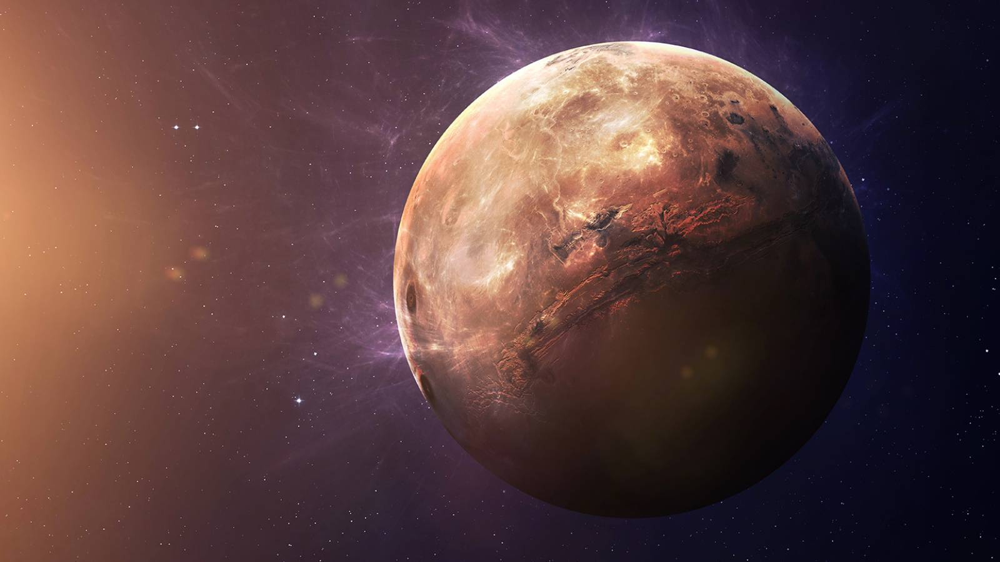

Planeta Mercur
INFORMAȚII DESPRE PLANETA MERCUR
Planeta Mercur este cea mai apropiată
planetă de soare, orbitând în doar 88 de zile
în jurul acestuia și este, de asemenea, cea
mai mică, doar puțin mai mare decât luna
Pământului.
Temperaturile de zi şi de
noapte ale lui Mercur sunt dramatic diferite,
deoarece sunt atât de asemănătoare
soarelui (aproximativ două cincimi din
distanţa dintre Pământ și soare).
Temperaturile din timpul zilei pot atinge 450
de grade Celsius, care este suficient de
fierbinte pentru a topi plumbul.
Atmosfera lui Mercur este formată din
oxigen, sodiu, hidrogen, heliu și potasiu şi
este prea mică pentru a sparge meteorii
care intră, astfel încât suprafața sa este
plină de cratere, la fel ca a lunii.
Descoperirea gheții și a compușilor organici
înghețați la polul nordic al lui Mercur,
precum și faptul că eruperea vulcanilor a
jucat un rol semnificativ în conturarea
suprafeței planetei, se numără printre
descoperirile recente.
CURIOZITĂȚI DESPRE PLANETA MERCUR
- Un an pe Planeta Mercur are doar 88 de zile.
- Mercur are riduri. Pe măsură ce miezul de fier al planetei s-a răcit și s- a contractat, suprafața planetei s-a încrețit.
- Doar două nave spațiale au vizitat vreodată Mercur. Datorită apropierii de Soare, Mercur este o planetă dificil de vizitat.
- Mercur este numit după mesagerul roman către zei.
- Are o atmosferă subțire. Mercurul are cea mai subțire atmosferă decâto orice altă planetă din sistemul solar. Atmosfera planetei este atât de subţire încât oamenii de știință i-au oferit un alt nume: o exosferă.